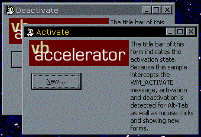

VB5 Deactivation Detection Sample (12K)
VB5 Deactivation Detection Sample (12K)
 VB6 Deactivation Detection Sample (12K)
VB6 Deactivation Detection Sample (12K)
 23 Nov 1998
23 Nov 1998
First Posted
 Subclassing Without The Crashes
Subclassing Without The Crashes

Detecting when another application is activated
In a form, there is a Deactivate event. Exactly what this method is for is hard to determine, because it hardly ever seems to fire. Ok, that's perhaps a little unfair - it never fires. One thing you certainly can't detect without a bit of additional work is when the user Alt-Tabs to another application. Detecting this can be useful, for example, when you the user is performing a drag or you're showing a pop-up tool window.
Detecting Activation and Deactivation
When a form in your application is activated or deactivated, Windows fires a WM_ACTIVATE message to the form. The wParam of this message tells you the reason the message has been fired:
- 0 - Form deactivated
- 1 - Form activated
- 2 - Form activated by a mouse click
The code to make this work is very simple with the Subclassing and Timer assistant:
' Subclassing object to catch Alt-Tab
Implements ISubclass
Private Const WM_ACTIVATE = &H6
Private Sub Form_Load()
' Start subclassing for WM_ACTIVATE
AttachMessage Me, Me.hwnd, WM_ACTIVATE
End Sub
Private Sub Form_QueryUnload(Cancel As Integer, UnloadMode As Integer)
' Clear up:
DetachMessage Me, Me.hwnd, WM_ACTIVATE
End Sub
Private Property Let ISubclass_MsgResponse(ByVal RHS As EMsgResponse)
' NR
End Property
Private Property Get ISubclass_MsgResponse() As EMsgResponse
' Respond to the message after windows has done its stuff:
ISubclass_MsgResponse = emrPreprocess
End Property
Private Function ISubclass_WindowProc( _
ByVal hwnd As Long, _
ByVal iMsg As Long, _
ByVal wParam As Long, ByVal lParam As Long _
) As Long
Select Case wParam
Case 0
Me.Caption = "Deactivate"
Case 1
Me.Caption = "Activate"
Case 2
Me.Caption = "Mouse Activate"
End Select
End Function